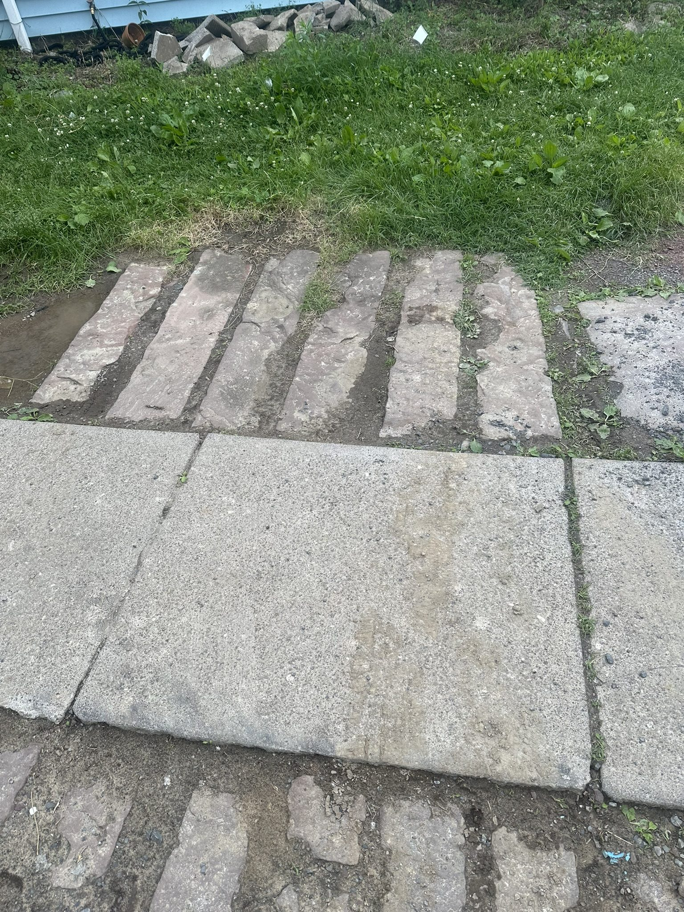
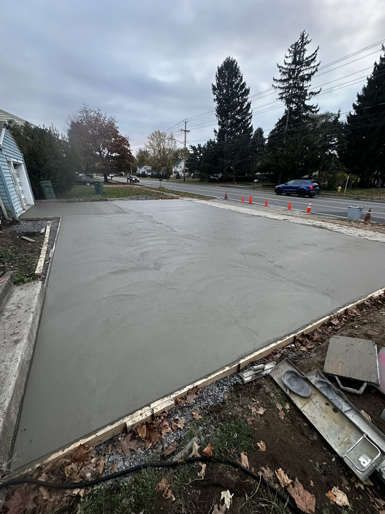

Rochester NY Masonry Contractor
First-Class Masonry Work.
Built to Last.
With well over three decades of masonry experience, Don DeManno has earned
the reputation of a first-class mechanic. Keystone Masonry & Construction
serves homeowners across Monroe County, Ontario County, and Wayne County — on time,
on budget, every job.
30+ years experience • 100% referral business • Free on-site estimates
Get a Free Estimate — No Pressure

Locally owned • Straightforward estimates • ACI certified • Monroe County, Ontario County & Wayne County
About Keystone Masonry
Keystone Masonry & Construction has been serving the Rochester area for over 11 years,
built entirely on referrals from homeowners who trusted us with their properties.
Don DeManno is an ACI-certified concrete finisher and Journeyman Bricklayer through
the Bricklayers and Allied Craftworkers — with over 100 completed projects across
Monroe County, Ontario County, and Wayne County.
Upstate New York is a severe exposure environment. Freeze-thaw cycles,
moisture saturation, and concrete in near-continuous contact with water
through the winter months — that's the reality here. Our approach focuses
on strength, durability, and structural stability built for those conditions.
Exceptional finishes and striking architectural results are part of the job too,
but the work has to hold up first.
ACI Certified Concrete Finisher • Journeyman Bricklayer, Bricklayers & Allied Craftworkers • 30+ years experience • 100+ projects completed
Masonry Services — Rochester NY
Patios & Walkways
Concrete, paver, and stone patios and walkways built to handle Upstate freeze-thaw conditions year after year.
Brick & Stone Work
Architectural brick and stone masonry delivering exceptional finishes for homes across the Rochester area.
Masonry Restoration
Tuckpointing, repointing, and restoration work that extends the life of aging brick and stone structures.
Chimney & Structural Repair
Masonry repair addressing spalling brick, cracked mortar joints, moisture damage, and structural wear. Learn more →
Concrete, Foundations & Retaining Walls
Structural concrete and masonry — foundations, retaining walls, and repairs for settling, cracking, and drainage issues.
Recent Project — Concrete Driveway
Failed stone and cobblestone driveway removed, new reinforced concrete installed.
Monroe County, Rochester NY.
Before
Heaved stone, freeze-thaw damage



During
Demo, base prep, reinforcement



After
Broom-finish concrete, expansion joints cut


How It Works
On-Site Estimate
Don comes out, reviews the property, and gives you a straight read on what the job actually involves.
Clear Quote
You get a straightforward estimate based on scope and materials — no corporate fluff, no upselling.
The Work
Completed on time, on budget, using techniques built for durability in harsh Upstate conditions.
Final Walkthrough
We walk the finished job together. If something isn't right, we make it right.
Common Questions
How do I know if my chimney or masonry needs repair?
Look for cracked mortar joints, spalling or flaking brick, water stains inside near the chimney, or any visible leaning or shifting. If you're seeing loose mortar, brick faces popping off, or cracks in a retaining wall, those are signs the masonry is failing. Don can come out and give you a straight read on whether it needs repair, a rebuild, or if it's still in decent shape.
Do you provide free estimates?
Yes. Call 585-490-1600 and Don will schedule a time to come out and look at the job. The estimate is free, there's no obligation, and there's no sales pitch. You'll get a clear scope of work and a straight number.
Do you work outside Rochester?
Yes. We serve homeowners across Monroe County, Ontario County, and Wayne County — including Greece, Irondequoit, Brighton, Webster, Penfield, Victor, Canandaigua, Newark, and the surrounding towns. If you're not sure whether you're in range, just call and ask.